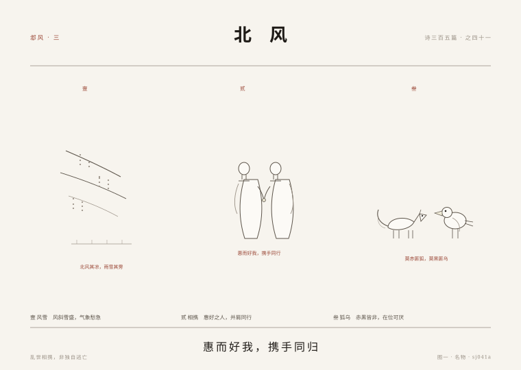
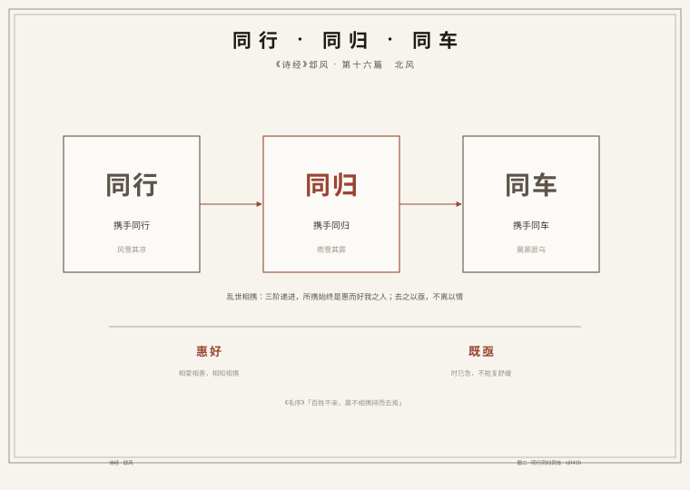

第四十一篇 北风
邶风 · 之三 SJ041
朗读 · 普通话
依经文正文朗读，句读从文；不配乐、不改速、不加拖腔。全库同一音色（豆包 TTS），非播音员录制。
一 解题
诗三判：
- 谁在说：一个身处危乱之国、相与知心的人。他呼召同好：趁着风雪未急，携手一同走；一章同行，二章同归，三章同车，一阶比一阶切迫。
- 说什么事：北风凉冷，大雪盛飞。爱我、与我相好的人，拉起手一同走。还能从容缓行吗？已经很急了！北风疾疾，大雪纷纷。爱我、与我相好的人，拉起手一同归去。还能从容缓行吗？已经很急了！赤色的无非是狐，黑色的无非是乌。爱我、与我相好的人，拉起手同乘一车。还能从容缓行吗？已经很急了！
- 为何编在此：《北门》写在下者怨而守分，此篇写乱世中人相与携去。国势危迫，百姓不亲；诗不写咒骂与控诉，只写一双相携的手——邶风之风，由室内、行役、仕宦，推到一路相从的患难之交。
《毛序》：「《北风》，刺虐也。卫国并为威虐，百姓不亲，莫不相携持而去焉。」——以为卫君威虐，百姓相携而去，刺之。
朱子《诗集传》：「北风雨雪，以比国家危乱将至，而气象愁急也。」——朱子以风雪比危乱之气象。
本库的看法：这首诗的骨在「携手同归」——乱世相携，非逃亡，是同行。
三章三阶：同行、同归、同车，所携之人始终是「惠而好我」的相知；风雪是外境之迫，狐乌是在位之恶。诗不写独奔之仓皇，写两人相将之从容；走是因为亟，携是因为好——相携而去，与相弃而去不同。
二 经文
第一章
北風其涼，雨雪其雱。惠而好我，攜手同行。其虛其邪？既亟只且！
第二章
北風其喈，雨雪其霏。惠而好我，攜手同歸。其虛其邪？既亟只且！
第三章
莫赤匪狐，莫黑匪烏。惠而好我，攜手同車。其虛其邪？既亟只且！
分章：毛传、朱子皆三章，章六句。一、二章以风雪起兴，三章以狐乌比在位；同行、同归、同车三阶递进。末二句三章同辞，问与叹相叠，节奏一促再促。
三 韵读
| 一 |
涼、雱、行；邪、且 |
陽部／魚部 |
| 二 |
喈、霏、歸；邪、且 |
微部／魚部 |
| 三 |
狐、烏、車；邪、且 |
魚部／魚部 |
一章陽部响亮，风雪满空；二章微部低密，雪势转霏；三章魚部平直一路，狐乌车乘皆收在鱼部。「其虚其邪，既亟只且」三章同押魚部，舒徐之问与急遽之叹同韵相拗，声上正是「想缓而不得缓」。全篇落脚声是「既亟只且」——时已急，不能再等。
四 字义与名物
- 其涼——其，语助；凉，风寒。
- 雨雪——下雪。雨（yù），自上降下。不是「雨水」之雨。
- 雱（pāng）——雪盛貌。
- 惠而好我——爱我而与我相好。惠，爱；好，相善。
- 攜手——拉手。
- 同行——一同走。
- 其虛其邪——还能舒缓从容吗？虚、邪（通「徐」）皆舒缓貌。不是「空虚」「邪恶」。
- 既亟只且——已经很急了。亟，急；只且（jū），语助辞。
- 喈（jiē）——风疾貌；一说寒凉之和。
- 霏（fēi）——雪密貌，雨雪纷飞。
- 同歸——一同归去。
- 莫赤匪狐——凡赤色的无不是狐。莫，无；匪，非。
- 莫黑匪烏——凡黑色的无不是乌。狐、乌比在位者之妖媚贪墨。
- 同車——同乘一车而去。
五 今译
第一章
北风凉冷，大雪纷纷盛飞。爱我、与我相好的人，拉起手一同走。还能从容缓行吗？已经很急了啊！
第二章
北风疾疾，大雪密密纷飞。爱我、与我相好的人，拉起手一同归去。还能从容缓行吗？已经很急了啊！
第三章
赤色的无非是狐，黑色的无非是乌。爱我、与我相好的人，拉起手同乘一车。还能从容缓行吗？已经很急了啊！
译注：「雨雪」译下雪，雨为降下；「雱」「霏」皆雪盛貌；「惠」译爱；「虚」「邪（徐）」译舒缓从容；「亟」译急；「只且」为语助；「莫赤匪狐、莫黑匪乌」比在位者。
六 章旨
一章：风雪同行。风寒雪盛，相携起步；问虚邪而叹既亟。
二章：雨雪同归。风疾雪霏，相携归去；辞同前而情转切。
三章：狐乌同车。在位可厌，相携登车；三阶走完，去志已决。
一、二章托风雪起兴，外境一层紧一层；三章落到狐乌，点出所避之人。同行—同归—同车，所携始终是「惠而好我」一人；相携是情，亟去是势；情不离，势不待——乱世之交，在此一见。
七 诗教
- 赋：携手同行、同归、同车皆实写相将之事；风雪、狐乌为比兴，赋而兼比。
- 观：可观一「世」。威虐之世，人思相去；狐乌满堂，知在位者不可与处。观乱世之交，先观所携何人。
- 群：此篇之「群」是患难相携之群；好我者相从，不善者相弃，群以相知为界。
- 怨：怨在威虐、在狐乌；怨不形于骂詈，只以相携而去见意。
八 分寸与边界
- 不可把「雨雪」的「雨」读作 yǔ 雨水。雨在此读
yù，降下；雨雪即下雪。
- 不可把「其虚其邪」解作「空虚、邪恶」。虚、邪（徐）皆舒缓貌；此句问「还能从容吗」，与「既亟」相对。
- 不可把「莫赤匪狐，莫黑匪乌」解成狐乌二物之咏。两句是比：赤色无非狐媚之辈，黑色无非贪墨之徒，指在位者。
- 不可把此篇读作独自逃亡之诗。全篇三复「惠而好我，携手……」，所写是两人相携；独行奔命非诗本位。
- 不可把「同车」解作婚嫁同车。同车是相携同乘而去；此篇无婚期之象，牵作婚期须看上下文，本库不取。
九 存疑
- 所去之国与年代：《毛序》系于卫之威虐；具体何公何世，今难确考。本库只取乱世相携之情。
- 「喈」字之义：一说风疾声，一说寒凉和调；与「凉」对文，本库从风疾。
- 狐、乌所比：一说比君臣之妖邪，一说比男女之不详；本库取在位者之恶。
- 同车者为谁：一说朋友相携，一说夫妇同去；本库取相知相好，不坐实夫妇。
- 「只且」之音义：只、且皆语助，音
jū；一说「且」为往。本库从语助。
十 跨典
- 《论语·微子》「鸟兽不可与同群，吾非斯人之徒与而谁与」——乱世去就之辨；孔子不肯独去，此诗相携同去，出处不同，皆不苟于其群。
- 《鄘风·载驰》「控于大邦，谁因谁极」——同是乱世求人相助；彼奔走告难，此携手相将。
- 《小雅·何草不黄》「匪兕匪虎，率彼旷野」——乱世征夫之哀；彼孤身在行，此相携在道。
- 《邶风·北门》「室人交遍谪我」——同卷之处境；彼守分不去，此相携而去，一守一去，互为对读。
- 《周易·同人》「同人于野，亨」——相知相携于旷野；诗之「惠而好我」即同人之始。
十一 双卡与图
双卡五对：
| 雨雪（下雪） |
雨水（误读） |
| 虚、邪（徐，舒缓） |
空虚邪恶（误训） |
| 狐乌（比在位者） |
咏物写实（误读） |
| 携手相携 |
独自逃亡（误读） |
| 同行—同归—同车 |
婚嫁同车（误读） |

图一 · 风雪·携手同行·狐乌 名物图

图二 · 同行—同归—同车 义理图
读图三处：
- 风雪画风线与雪点：名物图取风的斜向长笔、雪的疏密点簇两处；雪不作等幅圆点，风不作直线硬刮。
- 二人相携禁火柴人：中格画并肩背影，发或冠、肩线、宽袖、衣裾俱到；拉手处一笔相接。
- 义理三格是三阶递进：同行—同归—同车，箭头一阶推一阶；两尺标出「惠好」「既亟」，见相携以情、去之以亟。